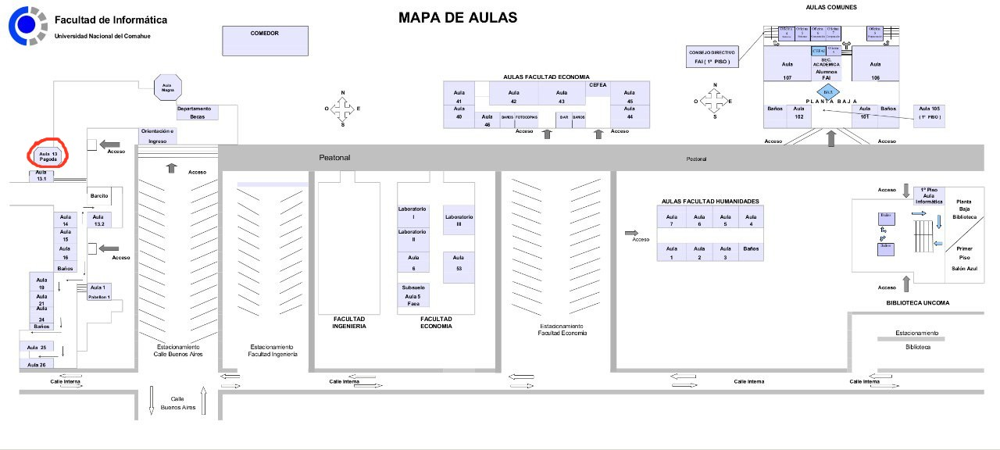

Preguntas Frecuentes
Sobre las clases:
- ¿Se toma asistencia en las clases prácticas o teóricas?
- ¿Dónde queda el aula 13?
- ¿Cómo sé en qué módulo estoy?
Sobre los exámenes parciales:
- ¿Se toman preguntas de la teoría en el parcial?
- ¿Qué Trabajos Prácticos entran en el segundo parcial?
- ¿Puedo usar calculadora en el parcial?
Sobre los exámenes finales:
- ¿Qué temas entran en el final?
- ¿Por qué el SIU no me deja inscribirme en el segundo llamado a examen final? (me inscribí en el primero)
- Si me anoto al primer llamado y me va mal, ¿puedo anotarme al segundo llamado?
- ¿Se va a dar alguna clase de consulta antes del examen final?
Sobre las clases:
¿Se toma asistencia en las clases prácticas o teóricas?
No, no se toma asistencia en ninguna clase.
El aula 13 es mas conocida como Aula Pagoda, y queda en la Facultad de Humanidades (edificio viejo), en diagonal al barcito, subiendo la escalera.
El módulo es el que elegiste al inscribirte en la materia en SIU.
Sobre los exámenes parciales:
¿Se toman preguntas de la teoría en el parcial?
Pueden entrar preguntas teóricas, pero del estilo que se preguntan en los TP.
¿Qué Trabajos Prácticos entran en el segundo parcial?
Todos los trabajos prácticos que no entraron en el primer parcial
¿Puedo usar calculadora en el parcial?
No, no se puede usar calculadora. Los ejercicios podrán resolverlos sin calculadora.
Sobre los exámenes finales:
¿Qué temas entran en el final?
Temario para prepararse para un examen final regular:
Sistemas de Numeración: Sistema posicional. Base de un sistema. Número y numeral. Sistemas binario, hexadecimal. Expresión general. Conversión de base.
Unidades de Información: Bit. Bytes. Sistema internacional y de prefijos binarios.
Representación de la Información: Clasificación de números (enteros, fraccionarios). Rango de representación. Representación sin signo. Representación con signo (signo magnitud, complemento a 2). Overflow. Notación en exceso. Representación de fraccionarios, racionales, aproximación a los irracionales. Punto fijo, notación científica, normalización, Punto flotante. Para todos los sistemas: Rango de representación, Truncamiento, Limitaciones.
Representación de texto y multimedia: Representación en memoria de imágenes y texto. Compresión de datos.
Organización y Arquitectura de Computadoras: Organización de una computadora. Componentes principales. Modelo von Neumann de la MCBE. Límites de la arquitectura. Ciclo de instrucción.
El Software: ISA. Lenguajes de alto nivel y bajo nivel. Lenguajes interpretados y compilados. Ciclo de compilación.
Sistemas Operativos: Cronología de los sistemas operativos más utilizados. Componentes del sistema operativo. Los cinco servicios básicos de los sistemas operativos. System calls. Gestión de memoria (contigua y no contigua, fragmentación). Gestión de procesos (estados de un proceso). Sistemas de archivos (unix file system)
Introducción a Redes: Componentes (nodos terminales, nodos intermedios), enlaces, software (aplicaciones y protocolos). Clasificación : lan, man, wan. Modelo de internet (TCP/IP). Hardware de nodos intermedios (switches, routers). Hardware de enlaces (fibra óptica/satelital/etc). Protocolo cliente-servidor. Direccionamiento IP, máscara de red. Tablas de ruteo. Enrutamiento.
De cada unidad anterior debe comprenderse los temas vistos en clases de teoría. Utilice los videos de las clases como una guía o temario, para luego repasar esos temas particulares del apunte completo.
Porque aún faltan cargar las actas del primer llamado a examen en el SIU. Una vez que el acta esté en SIU y confirmada por académica es posible inscribirse al siguiente llamado. Antes no.
Si me anoto al primer llamado y me va mal, ¿puedo anotarme al segundo llamado?
Sí, es posible.
¿Se va a dar alguna clase de consulta antes del examen final?
Sí, siempre damos consulta antes del final, pero deben solicitarla a algún docente.